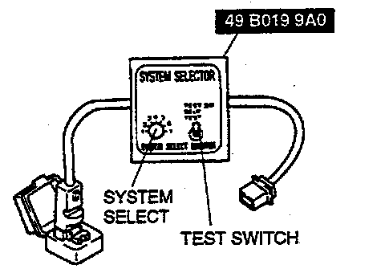
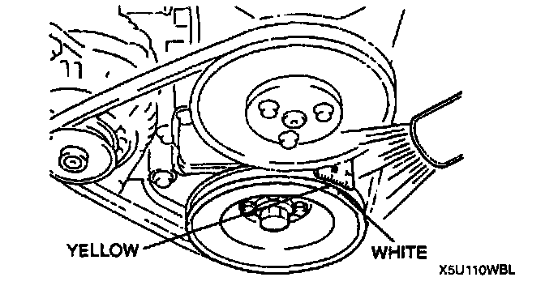

Ignition Timing Inspection
ENGINE TUNE-UP PREPARATION1. Warm up the engine to normal operating temperature.
2. Shift transmission into Neutral (MT) or P position (AT).
3. Turn off all electrical loads.
^ Headlight
^ Blower
^ Rear window defroster
4. Verify that the battery is fully charged.
5. Wait until the electrical fan stops.
6. Connect the NGS tester to the data link connector-2 and select the "PID/DATA MONITOR AND RECORD" function and press TRIGGER.
7. Select "RPM" and press TRIGGER.
8. Press "SET UP" and turn the test mode on (press ON).
9. Press CANCEL.
10. Select "START" to begin.
IGNITION TIMING INSPECTION
1. Perform "Engine Tune-up Preparation". Refer to Maintenance; Tune-up and Engine Performance Checks; Service and Repair.
2. Verify that the idle speed is within the specification.
Specification: 750 - 850 (800 ± 50) rpm
3. If not as specified, adjust the idle speed.

4. Connect the SST (System Selector) to the data link connector.
5. Set switch A to position 1.
6. Set the test switch to SELF TEST.
7. Connect a timing light to the high-tension lead of the No.1 cylinder.
8. Verify that the timing mark (white) on the crankshaft pulley and the T mark on the timing belt cover are aligned.
Ignition timing: BTDC 9° - 11° (10° ± 1°) (TIMING MARK [YELLOW])
9. Disconnect the SST (System Selector).

10. Verify that the timing mark (yellow) is within the specification.
Specification BTDC 6 - 18°
11. If not as specified, inspect the following.
^ Camshaft position sensor
^ Crankshaft position sensor
^ Throttle position sensor
^ Engine coolant temperature sensor
^ Neutral switch (MT)
^ Clutch switch (MT)
^ Transmission range switch (AT)
12. If the devices are normal, replace the PCM.